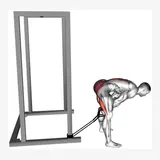
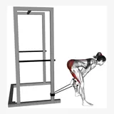
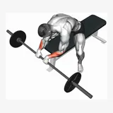
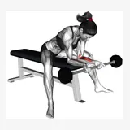
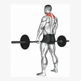
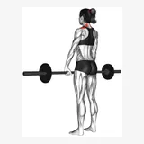
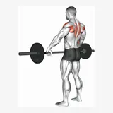
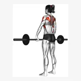

45 Degree Bicycle Twisting Crunch
45-degree-bicycle-twisting-crunch
45 Degree Side Bend
45-degree-side-bend
Air Twisting Crunch
air-twisting-crunch
Ball Sit-up (on stability ball)
ball-sit-up-on-stability-ball
Band Assisted Pull-up
band-assisted-pull-up
Band Bent Over Hip Extension
band-bent-over-hip-extension
Band Bent-over Rear Lateral Raise
band-bent-over-rear-lateral-raise
Band Bent-over Row
band-bent-over-row
Band Decline Sit-ups
band-decline-sit-ups
Band High Fly
band-high-fly
Band Hip Abduction
band-hip-abduction
Band Hip Adduction
band-hip-adduction
Band Kneeling One Arm Pulldown
band-kneeling-one-arm-pulldown
Band Leg Curl
band-leg-curl
Band One Arm Forward Raise
band-one-arm-forward-raise
Band One Arm Twisting Seated Row
band-one-arm-twisting-seated-row
Band One Leg Kickback Bent Position
band-one-leg-kickback-bent-position
Band Overhead Triceps Extension
band-overhead-triceps-extension
Band Pull Through
band-pull-through
male
femaleBand Seated Leg Extension
band-seated-leg-extension
Band Seated Row
band-seated-row
Band Side Bend
band-side-bend
Band Side Triceps Pushdown
band-side-triceps-pushdown
Band Standing Calf Raise
band-standing-calf-raise
Band Standing Crunch
band-standing-crunch
Band Standing Hip Extension
band-standing-hip-extension
Band Standing Leg Curl
band-standing-leg-curl
Band Standing Lift
band-standing-lift
Band Standing Rear Delt Row
band-standing-rear-delt-row
Band Straight Back Seated Row
band-straight-back-seated-row
Band Triceps Pushdown
band-triceps-pushdown
Band Twist
band-twist
Band Twist (Up-down)
band-twist-up-down
Barbell Clean And Press
barbell-clean-and-press
Barbell Decline Bench Press
barbell-decline-bench-press
Barbell Drag Curl
barbell-drag-curl
Barbell Front Raise
barbell-front-raise
Barbell Lunge
barbell-lunge
Barbell Prone Incline Curl
barbell-prone-incline-curl
Barbell Rear Delt Raise
barbell-rear-delt-raise
Barbell Reverse Wrist Curl (over-grip)
barbell-reverse-wrist-curl-over-grip
male
femaleBarbell Seated Behind Head Military Press
barbell-seated-behind-head-military-press
Barbell Shrug
barbell-shrug
male
femaleBarbell Standing Back Wrist Curl
barbell-standing-back-wrist-curl
Barbell Underhand Bent-over Row
barbell-underhand-bent-over-row
Barbell Upright Row (wide-grip)
barbell-upright-row-wide-grip
male
femaleBattling Ropes
battling-ropesmalefemale
Bench Dips
bench-dipsmalefemale
Bench Leg Raise
bench-leg-raisemalefemale
Bench Pull-ups
bench-pull-upsmalefemale
Bent Knee Lying Twist
bent-knee-lying-twistmalefemale
Bent knee Lying twist (On Stability Ball)
bent-knee-lying-twist-on-stability-ballmalefemale
Burpee
burpeemalefemale
Cable Front Raise
cable-front-raisemalefemale
Cable Lying Fly, Flat Bench Cable Fly
cable-lying-fly-flat-bench-cable-flymalefemale
Cable One Arm Curl
cable-one-arm-curlmalefemale
Cable One Arm Forward Raise
cable-one-arm-forward-raisemalefemale
Cable One Arm Twisting Seated Row
cable-one-arm-twisting-seated-rowmalefemale
Cable Rear Delt Row (with rope)
cable-rear-delt-row-with-ropemalefemale
Cable Seated High Row (V-bar)
cable-seated-high-row-v-barmalefemale
Cable Standing Crunch
cable-standing-crunchmalefemale
Cable Standing Inner Curl
cable-standing-inner-curlmalefemale
Cable Standing Lift
cable-standing-liftmalefemale
Cable Straight Back Seated High Row (reverse-grip)
cable-straight-back-seated-high-row-reverse-gripmalefemale
Cable Twist (up-down)
cable-twist-up-downmalefemale
Chest Lift with Rotation
chest-lift-with-rotationmalefemale
Chin-ups (narrow parallel grip)
chin-ups-narrow-parallel-gripmalefemale
Close Feet Leg Press
close-feet-leg-pressmalefemale
Close Grip Push-ups
close-grip-push-upsmalefemale
Commando Pull-up
commando-pull-upmalefemale
Corkscrew Pilates
corkscrew-pilatesmalefemale
Crunch (leg raise)
crunch-leg-raisemalefemale
Crunch (legs on stability ball)
crunch-legs-on-stability-ballmalefemale
Crunch (on bench)
crunch-on-benchmalefemale
Crunch (straight leg up)
crunch-straight-leg-upmalefemale
Crunch Floor
crunch-floormalefemale
Decline Dumbbell Bench Press (45 degree)
decline-dumbbell-bench-press-45-degreemalefemale
Donkey Calf Raise
donkey-calf-raisemalefemale
Dumbbell Bar Grip Sumo Squat
dumbbell-bar-grip-sumo-squatmalefemale
Dumbbell Behind Back Wrist Curl
dumbbell-behind-back-wrist-curlmalefemale
Dumbbell Bent-over Row
dumbbell-bent-over-rowmalefemale
Dumbbell Close Grip Press
dumbbell-close-grip-pressmalefemale
Dumbbell Concentration Curl
dumbbell-concentration-curlmalefemale
Dumbbell Deadlift
dumbbell-deadliftmalefemale
Dumbbell Decline Fly (45 degree)
dumbbell-decline-fly-45-degreemalefemale
Dumbbell Fly On Exercise Ball
dumbbell-fly-on-exercise-ballmalefemale
Dumbbell Front Raise
dumbbell-front-raisemalefemale
Dumbbell Front Squat
dumbbell-front-squatmalefemale
Dumbbell Hammer Grip Incline Bench Row
dumbbell-hammer-grip-incline-bench-rowmalefemale
Dumbbell Incline Fly On Exercise Ball
dumbbell-incline-fly-on-exercise-ballmalefemale
Dumbbell Incline Hammer Curl
dumbbell-incline-hammer-curlmalefemale
Dumbbell Incline Hammer Press
dumbbell-incline-hammer-pressmalefemale
Dumbbell Incline Rear Lateral Raise
dumbbell-incline-rear-lateral-raisemalefemale
Dumbbell Incline Row
dumbbell-incline-rowmalefemale
Dumbbell Incline Shrug
dumbbell-incline-shrugmalefemale
Dumbbell Incline Triceps Extension
dumbbell-incline-triceps-extensionmalefemale
Dumbbell Iron Cross
dumbbell-iron-crossmalefemale
Dumbbell Kickback
dumbbell-kickbackmalefemale
Dumbbell Lying Alternate Extension
dumbbell-lying-alternate-extensionmalefemale
Dumbbell Lying Leg Curl
dumbbell-lying-leg-curlmalefemale
Dumbbell Lying Hammer Press
dumbbell-lying-hammer-pressmalefemale
Dumbbell Lying Rear Delt Row
dumbbell-lying-rear-delt-rowmalefemale
Dumbbell Lying Triceps Extension
dumbbell-lying-triceps-extensionmalefemale
Dumbbell One Arm Lateral Raise
dumbbell-one-arm-lateral-raisemalefemale
Dumbbell One Arm Triceps Extension
dumbbell-one-arm-triceps-extensionmalefemale
Dumbbell One Arm Zottman Preacher Curl
dumbbell-one-arm-zottman-preacher-curlmalefemale
Dumbbell Palm Rotational Bent Over Row
dumbbell-palm-rotational-bent-over-rowmalefemale
Dumbbell Preacher Curl Over Exercise Ball
dumbbell-preacher-curl-over-exercise-ballmalefemale
Dumbbell Pronate-grip Triceps Extension
dumbbell-pronate-grip-triceps-extensionmalefemale
Dumbbell Prone Incline Curl
dumbbell-prone-incline-curlmalefemale
Dumbbell Rear Delt Row
dumbbell-rear-delt-rowmalefemale
Dumbbell Reverse Grip Row
dumbbell-reverse-grip-rowmalefemale
Dumbbell Seated Calf Raise
dumbbell-seated-calf-raisemalefemale
Dumbbell Seated Front Raise
dumbbell-seated-front-raisemalefemale
Dumbbell Seated Kickback
dumbbell-seated-kickbackmalefemale
Dumbbell Seated Lateral Raise
dumbbell-seated-lateral-raisemalefemale
Dumbbell Seated Neutral Wrist Curl
dumbbell-seated-neutral-wrist-curlmalefemale
Dumbbell Side Bend
dumbbell-side-bendmalefemale
Dumbbell Single Leg Calf Raise
dumbbell-single-leg-calf-raisemalefemale
Dumbbell Single Leg Squat
dumbbell-single-leg-squatmalefemale
Dumbbell Squat
dumbbell-squatmalefemale
Dumbbell Standing Calf Raise
dumbbell-standing-calf-raisemalefemale
Dumbbell Upright Row
dumbbell-upright-rowmalefemale
EZ Barbell Anti Gravity Press
ez-barbell-anti-gravity-pressmalefemale
EZ Barbell Biceps Curl
ez-barbell-biceps-curlmalefemale
Hammer Grip Pull-up
hammer-grip-pull-upmalefemale
Hundred Pilates
hundred-pilatesmalefemale
Incline Leg Hip Raise
incline-leg-hip-raisemalefemale
Incline Push-Ups
incline-push-upsmalefemale
Inverted Row Between Chairs
inverted-row-between-chairsmalefemale
Inverted Row With Straps
inverted-row-with-strapsmalefemale
Jack Split Crunches
jack-split-crunchesmalefemale
Jackknife Floor
jackknife-floormalefemale
Jackknife Pilates
jackknife-pilatesmalefemale
Jump Rope
jump-ropemalefemale
Jump Step-up
jump-step-upmalefemale
Jumping Jack
jumping-jackmalefemale
Kettlebell Deadlift
kettlebell-deadliftmalefemale
Landmine 180
landmine-180malefemale
Leg Curl (on stability ball)
leg-curl-on-stability-ballmalefemale
Leg Raise Hip Lift
leg-raise-hip-liftmalefemale
Machine Back Extension
machine-back-extensionmalefemale
Machine Horizontal Leg Press
machine-horizontal-leg-pressmalefemale
Machine Kneeling Leg Curl
machine-kneeling-leg-curlmalefemale
Machine Lying Chest Press
machine-lying-chest-pressmalefemale
Machine Reverse Hyperextension
machine-reverse-hyperextensionmalefemale
Machine Seated Leg Raise Crunch
machine-seated-leg-raise-crunchmalefemale
Machine Shrug
machine-shrugmalefemale
Machine Standing Hip Extension
machine-standing-hip-extensionmalefemale
Machine Standing Rear Kick
machine-standing-rear-kickmalefemale
Machine T-bar Row
machine-t-bar-rowmalefemale
Machine Triceps Extension
machine-triceps-extensionmalefemale
Machine Triceps Extension (neutral grip)
machine-triceps-extension-neutral-gripmalefemale
Lying Floor Leg Raise
lying-floor-leg-raisemalefemale
Lying Hip Lift (on stability ball)
lying-hip-lift-on-stability-ballmalefemale
Lying Scissor Kick
lying-scissor-kickmalefemale
Lying Straight Leg Raise
lying-straight-leg-raisemalefemale
Lying Supine Dumbbell Curl
lying-supine-dumbbell-curlmalefemale
Medicine Ball Sit-up (wall)
medicine-ball-sit-up-wallmalefemale
Otis-ups
otis-upsmalefemale
Pull-up (wide back grip)
pull-up-wide-back-gripmalefemale
Rear Decline Bridge
rear-decline-bridgemalefemale
Reverse Crunch
reverse-crunchmalefemale
Reverse Grip Machine Lat Pulldown
reverse-grip-machine-lat-pulldownmalefemale
Ring High Row
ring-high-rowmalefemale
Rotate Push up
rotate-push-upmalefemale
Russian Twist (on stability ball arms straight)
russian-twist-on-stability-ball-arms-straightmalefemale
Scapula Dips
scapula-dipsmalefemale
Seated Twist (on stability ball)
seated-twist-on-stability-ballmalefemale
Seated Twist (straight arm)
seated-twist-straight-armmalefemale (available variant)
Side Bend (on stability ball)
side-bend-on-stability-ballmalefemale
Sit-Up
sit-upmalefemale
Sit-up On Exercise Ball
sit-up-on-exercise-ballmalefemale
Sled 45 Degree Leg Wide Press
sled-45-degree-leg-wide-pressmalefemale
Smith Calf Raise
smith-calf-raisemalefemale
Smith Chair Squat
smith-chair-squatmalefemale
Smith Deadlift - Deadlift
smith-deadlift-deadliftmalefemale
Smith Leg Press
smith-leg-pressmalefemale
Spell Caster
spell-castermalefemale
Treadmill Running
treadmill-runningmalefemale
Twisting Crunch
twisting-crunchmalefemale
V-up
v-upmalefemale
Vertical Leg Raise (on parallel bars)
vertical-leg-raise-on-parallel-barsmalefemale
Weighted Leg Extension Crunch
weighted-leg-extension-crunchmalefemale
Weighted Lying Twist
weighted-lying-twistmalefemale
Weighted Sissy Squat
weighted-sissy-squatmalefemale
Wide Grip Push-ups
wide-grip-push-upsmalefemale
Barbell Bench Press
barbell-bench-pressmalefemale
Dumbbell Bench Press
dumbbell-bench-pressmalefemale
Incline Barbell Press
incline-barbell-pressmalefemale
Incline Dumbbell Press
incline-dumbbell-pressmalefemale
Machine Chest Press
machine-chest-pressmalefemale
Cable Fly
cable-flymalefemale
Pec Deck
pec-deckmalefemale
Push-Up
push-upmalefemale
Pull-Up
pull-upmalefemale
Weighted Pull-Up
weighted-pull-upmalefemale (available variant)
Chin-Up
chin-upmalefemale
Lat Pulldown
lat-pulldownmalefemale
Barbell Row
barbell-rowmalefemale
Single-Arm Dumbbell Row
single-arm-dumbbell-rowmalefemale
Chest-Supported Row
chest-supported-rowmalefemale
Seated Cable Row
seated-cable-rowmalefemale
Machine Row
machine-rowmalefemale
Straight-Arm Pulldown
straight-arm-pulldownmalefemale
Cable Lat Pullover
cable-lat-pullovermalefemale
Back Extension
back-extensionmalefemale
Overhead Press
overhead-pressmalefemale
Dumbbell Shoulder Press
dumbbell-shoulder-pressmalefemale
Machine Shoulder Press
machine-shoulder-pressmale female
female
Lateral Raise
lateral-raisemalefemale
Cable Lateral Raise
cable-lateral-raisemalefemale
Reverse Pec Deck
reverse-pec-deckmalefemale
Face Pull
face-pullmalefemale
Rear-Delt Fly
rear-delt-flymalefemale
Upright Row
upright-rowmalefemale
Barbell Curl
barbell-curlmalefemale
Dumbbell Curl
dumbbell-curlmalefemale
Hammer Curl
hammer-curl malefemale
malefemaleIncline Dumbbell Curl
incline-dumbbell-curlmalefemale
Preacher Curl
preacher-curl malefemale
malefemaleCable Curl
cable-curlmalefemale
Triceps Pushdown
tricep-pushdownmalefemale
Overhead Cable Extension
overhead-tricep-extensionmalefemale
Skull Crusher
skull-crusher male
male female
femaleClose-Grip Bench Press
close-grip-bench-pressmalefemale
Dumbbell Overhead Extension
dumbbell-overhead-extensionmalefemale
Assisted or Bodyweight Dip
dipmalefemale
Back Squat
back-squatmalefemale
Front Squat
front-squatmalefemale
Leg Press
leg-pressmalefemale
Hack Squat
hack-squatmalefemale
Bulgarian Split Squat
bulgarian-split-squatmalefemale
Lunge
lungemalefemale
Leg Extension
leg-extensionmalefemale
Step-Up
step-upmalefemale
Romanian Deadlift
romanian-deadliftmalefemale
Conventional Deadlift
conventional-deadliftmalefemale
Trap-Bar Deadlift
trap-bar-deadliftmalefemale (available variant)
Hip Thrust
hip-thrustmalefemale
Glute Bridge
glute-bridgemalefemale (available variant)
Lying Leg Curl
leg-curlmalefemale
Seated Leg Curl
seated-leg-curlmalefemale
Good Morning
good-morningmalefemale (available variant)
Cable Pull-Through
cable-pull-throughmalefemale
Single-Leg Romanian Deadlift
single-leg-romanian-deadliftmalefemale (available variant)
Standing Calf Raise
standing-calf-raisemalefemale
Seated Calf Raise
seated-calf-raisemalefemale
Leg-Press Calf Raise
leg-press-calf-raisemalefemale
Single-Leg Calf Raise
single-leg-calf-raisemalefemale
Plank
plankmale female
female
Side Plank
side-plankmalefemale
Dead Bug
dead-bugmalefemale (available variant)
Bird Dog
bird-dogmalefemale (available variant)
Cable Crunch
cable-crunchmalefemale
Pallof Press
pallof-pressmalefemale
Hanging Knee Raise
hanging-knee-raisemalefemale
Ab Wheel Rollout
ab-wheel-rolloutmalefemale (available variant)
Indoor Rower
indoor-rowermalefemale (available variant)
Ski Erg
ski-ergmalefemale (available variant)
Stationary Bike
stationary-bikemalefemale
Running
runningmalefemale
Goblet Squat
goblet-squatmalefemale
Bodyweight Squat
bodyweight-squatmalefemale
Pike Push-Up
pike-push-upmalefemale (available variant)
Smith Machine Bench Press
smith-machine-bench-pressmalefemale (available variant)
Smith Machine Incline Press
smith-machine-incline-pressmalefemale (available variant)
Incline Machine Chest Press
incline-machine-chest-pressmalefemale
Converging Chest Press
converging-chest-pressmalefemale
Deficit Push-Up
deficit-push-upmalefemale
Weighted Push-Up
weighted-push-upmalefemale (available variant)
Dumbbell Fly
dumbbell-flymalefemale
Incline Dumbbell Fly
incline-dumbbell-flymalefemale
Low-to-High Cable Fly
low-to-high-cable-flymalefemale (available variant)
High-to-Low Cable Fly
high-to-low-cable-flymalefemale
Single-Arm Cable Lat Pulldown
single-arm-cable-lat-pulldownmalefemale
Neutral-Grip Lat Pulldown
neutral-grip-lat-pulldownmalefemale
Wide-Grip Lat Pulldown
wide-grip-lat-pulldownmalefemale
Underhand Lat Pulldown
underhand-lat-pulldownmalefemale
Chest-Supported T-Bar Row
chest-supported-t-bar-rowmalefemale
Plate-Loaded High Row
plate-loaded-high-rowmalefemale
One-Arm Machine Row
one-arm-machine-rowmalefemale (available variant)
Dumbbell Pullover
dumbbell-pullovermalefemale (available variant)
T-Bar Row
t-bar-rowmalefemale
Seal Row
seal-rowmalefemale
Meadows Row
meadows-rowmalefemale (available variant)
Wide-Grip Cable Row
wide-grip-cable-rowmalefemale
Machine Lateral Raise
machine-lateral-raisemalefemale
Leaning Cable Lateral Raise
leaning-cable-lateral-raisemalefemale (available variant)
Cuffed Cable Lateral Raise
cuffed-cable-lateral-raisemalefemale (available variant)
Smith Machine Shoulder Press
smith-machine-shoulder-press malefemale
malefemaleArnold Press
arnold-pressmalefemale
Cable Y-Raise
cable-y-raisemalefemale (available variant)
Cable Rear-Delt Fly
cable-rear-delt-flymalefemale
Chest-Supported Rear-Delt Row
chest-supported-rear-delt-rowmalefemale
Dumbbell Shrug
dumbbell-shrugmalefemale
Smith Machine Shrug
smith-machine-shrugmalefemale (available variant)
Bayesian Cable Curl
bayesian-cable-curlmalefemale (available variant)
Dumbbell Preacher Curl
dumbbell-preacher-curlmalefemale
EZ-Bar Preacher Curl
ez-bar-preacher-curlmalefemale (available variant)
Cable Preacher Curl
cable-preacher-curlmalefemale (available variant)
Machine Preacher Curl
machine-preacher-curlmale female
female
Cross-Body Hammer Curl
cross-body-hammer-curlmale female
female
Spider Curl
spider-curlmalefemale
Reverse Curl
reverse-curlmalefemale (available variant)
Single-Arm Overhead Cable Extension
single-arm-overhead-cable-extensionmalefemale (available variant)
Cross-Body Cable Triceps Extension
cross-body-cable-triceps-extensionmalefemale (available variant)
Cable Skull Crusher
cable-skull-crushermalefemale
EZ-Bar Skull Crusher
ez-bar-skull-crushermalefemale
Machine Dip
machine-dipmalefemale
Weighted Dip
weighted-dipmalefemale (available variant)
Single-Arm Triceps Pushdown
single-arm-triceps-pushdownmalefemale
Rope Triceps Pushdown
rope-triceps-pushdownmalefemale
Pendulum Squat
pendulum-squatmalefemale (available variant)
Smith Machine Squat
smith-machine-squatmalefemale
Reverse Nordic Curl
reverse-nordic-curlmalefemale (available variant)
Belt Squat
belt-squatmalefemale (available variant)
Heel-Elevated Squat
heel-elevated-squatmalefemale (available variant)
Walking Lunge
walking-lungemalefemale
Reverse Lunge
reverse-lungemalefemale (available variant)
Single-Leg Leg Press
single-leg-leg-pressmalefemale (available variant)
Single-Leg Leg Curl
single-leg-leg-curlmalefemale (available variant)
Nordic Hamstring Curl
nordic-hamstring-curlmalefemale
Smith Machine Romanian Deadlift
smith-machine-romanian-deadliftmalefemale (available variant)
Dumbbell Romanian Deadlift
dumbbell-romanian-deadliftmalefemale
Glute-Ham Raise
glute-ham-raisemalefemale (available variant)
Machine Hip Thrust
machine-hip-thrustmalefemale (available variant)
Smith Machine Hip Thrust
smith-machine-hip-thrustmalefemale (available variant)
Cable Glute Kickback
cable-glute-kickbackmalefemale
Hip Abduction Machine
hip-abduction-machinemalefemale (available variant)
Hip Adduction Machine
hip-adduction-machinemalefemale
Copenhagen Plank
copenhagen-plankmalefemale (available variant)
Tibialis Raise
tibialis-raisemalefemale (available variant)
Hanging Leg Raise
hanging-leg-raisemalefemale
Machine Crunch
machine-crunchmalefemale
Wrist Curl
wrist-curlmalefemale
Reverse Wrist Curl
reverse-wrist-curlmalefemale
Wrist Roller
wrist-rollermalefemale (available variant)
Incline Treadmill Walk
incline-treadmill-walkmalefemale (available variant)
Elliptical
ellipticalmalefemale
Stair Climber
stair-climbermalefemale (available variant)
Assault Bike
assault-bikemalefemale (available variant)
Swimming
swimmingmalefemale (available variant)